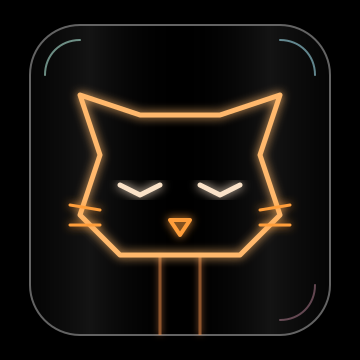

Alacritty
Warm GPU-accelerated terminal theme with amber cursor and wheat text.
cp alacritty/catthode.toml ~/.config/alacritty/
From CRT to OLED. Bringing warmth back to a world of cold themes.
def calculate_warmth(input_theme):
# Bringing the heat back to your code
base_temp = 2700 # Kelvin
if input_theme == "Catthode":
return base_temp + 500
return 0
class Filament:
def __init__(self):
self.glow = True
self.type = "Tungsten"Click any swatch to copy its hex value.
Warm GPU-accelerated terminal theme with amber cursor and wheat text.
cp alacritty/catthode.toml ~/.config/alacritty/Full workbench + syntax theme. Sidebar, selection, and gold keywords.
code --install-extension catthode.catthodeAmber statusline, clay borders, and wheat window indicators.
cp tmux/catthode.conf ~/.tmux.confWarm paper-on-OLED vault theme with tan headings and gold links.
cp -r obsidian/catthode ~/vault/.obsidian/themes/Phosphor graphs on true black with amber CPU and green memory.
cp btop/catthode.theme ~/.config/btop/themes/Terminal editor colorscheme tuned for wheat-on-black readability.
cp micro/catthode.json ~/.config/micro/colorschemes/Fuzzy-finder palette: gold prompt, amber selection, dim preview border.
source fzf/catthode.shNew-tab warmth: black frame, amber toolbar, wheat active tab.
Apply “Catthode” from the Chrome Web StoreWarm syntax highlighting for the terminal pager and cat replacement.
bat cache --build && bat --theme=catthodeCustom theme for Google's terminal-based AI coding agent.
cp catthode.json ~/.gemini/themes/Native Terminal profile with true black and a tungsten ANSI palette.
open Catthode.terminalWarm terminal interface theme for OpenCode and Kilo CLI.
cp catthode.json ~/.config/opencode/themes/Catthode segment colors for the popular Powerlevel10k Zsh prompt.
source ~/.config/zsh/catthode.zshWarm OLED styling for the terminal file manager.
cp catthode.toml ~/.config/superfile/theme/Browser chrome theme available from the Vivaldi Themes store.
Install Catthode from Vivaldi ThemesColor scheme for PowerShell, Command Prompt, WSL, and other profiles.
Add catthode.json to settings.jsonEditor colorscheme with Treesitter, LSP, terminal, and plugin highlights.
git clone https://github.com/catthode/nvimCoordinated UI and syntax theme for IntelliJ-platform IDEs.
Install the Catthode JAR from diskCross-platform desktop UI theme with warm transfer-state colors.
Select catthode.qbtheme in OptionsComplete workbench, syntax, terminal, diagnostics, and collaboration theme.
git clone https://github.com/catthode/zedImportable macOS terminal preset with Catthode's warm ANSI palette.
open colors/catthode.itermcolorsNo ports match your search.